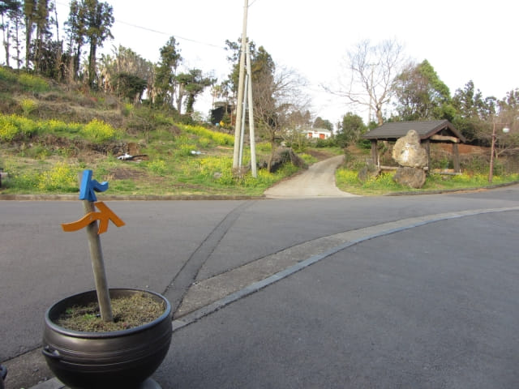
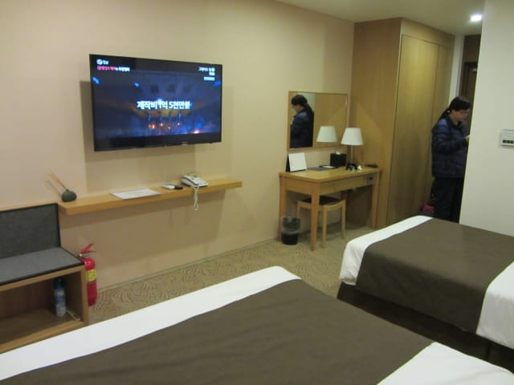

離開星川峰展望台, 打算沿另一邊的樓梯走下山, 怎料在星川峰山上兜兜轉轉, 最後唯有返回山腰的涼亭, 循另一邊的偶來8號小路, 終於抵達山下的守寶寺(수보사), 接著來到一個路口, 迎面有三條路。那條路才是返回酒店的?

這段路有很多分叉路, 很容易走錯, 花了不少時間後, 前後嚐試了幾條路, 最後猶疑中冒險選擇了一條看來不像往酒店的荒蕪小路, 戰戰兢兢的走了十多分鐘後, 經過一間酒店, 才感覺應該走對了路。
穿過幾條街道後, 來到一條寬闊熱鬧的街道, 轉左走一會, 隱約看見遠處的酒店, 才鬆了一口氣。看看手錶, 約下午六時, 從離開星川峰展望台計, 用了一小時才來到酒店附近的街道。
晚餐於酒店附近餐廳
酒店附近有幾間餐廳, 但大部份都不合適, 前後巡了幾次, 花了很多時間, 街道已漸漸昏暗, 才決定在一間看來比較便宜的餐廳吃晚餐。
我叫了一客豆腐鍋, 價錢是8,000韓元。
她叫了一客豚肉鍋, 價錢同樣是8,000韓元。
當然最好利用這段時間寫日記。
等了一會, 我們的食物送來了。味道不錯的, 走了一整天的路, 可以舒適的吃一頓晚餐, 十分滿足。
中文區 宿本暱客雅酒店 – 中文
吃完晚餐, 沿昏暗馬路走一會便返回酒店。辦理了入住手續, 取回行李, 乘電梯往6F房間, 放下行李, 差不多晚上八時了。
房間十分寬敞舒適, 值得推薦的一間酒店。




昨晚沒有睡覺, 今天又走了一整天的路, 真是很累, 今晚早點睡吧, 就這樣結束了今天充實的行程。
睡前看看韓國氣象廳 (http://www.kma.go.kr)天氣預測, 頓時暈得一陣陣, 未來幾天和中期預測都是密雲有雨, 如果預測正確, 豈不是整個濟州島旅程都是在雨中進行! Oh! No~~~~~~! 看來濟州島部份行程極有可能要取消和更改了!